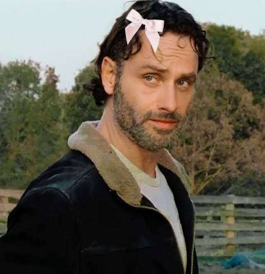
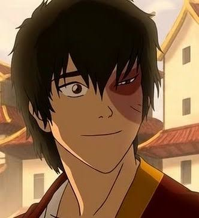

"Si no arriesgas tu vida, no puedes crear un futuro." — Monkey D. Luffy

"Todos hemos hecho cosas terribles solo para sobrevivir. Pero aún podemos recuperarnos. No estamos perdidos del todo. Podemos volver. Lo sé... todos podemos cambiar." — Rick Grimes
"A veces la vida es como este túnel. No siempre se ve la luz al final, pero si sigues adelante, llegarás a un lugar mejor." — Iroh

"No necesito suerte. No la quiero. Siempre he tenido que luchar y esforzarme, y eso me ha hecho fuerte. Eso me ha convertido en quien soy." — Zuko
haz doble clic en la pantalla para continuar
Una sorpresa en un día cualquiera
haz clic para iniciar la lectura
Últimamente despertar por las mañanas se siente tan agotador, los días se sienten tan largos y no les encuentro sentido, un día más un día menos me repito, esta rutina me cansa, me miro al espejo y me digo que este día será diferente, pero cada vez eso se vuelve más difícil, porque mis ojos ya no creen en mis palabras.
Los días se vuelven monótonos, estresantes, pareciera que solo existiera en una pequeña esquina, alejado de los demás, siempre hay trabajo y más trabajo, ¿por qué no se detiene? Cada vez se acumulan más, y cuando termino uno siempre aparecen dos nuevos, siento que esto me está comiendo la cabeza.
Los mejores momentos son cuando puedo olvidarme de todo, aunque a veces solo me cueste poder hacerlo, esos pequeños instantes de paz, como cuando uso mis audífonos y solo cierro los ojos y me dejo llevar por el abrupto movimiento del bus, por la música, por el viento en mi rostro, por un pequeño momento en que todo deja de tener importancia, hasta que el simple hecho de sentir el vibrar de mi celular marcando que es la hora de trabajar.
A veces creo que esto es un ciclo sin fin, que nunca terminará, esta sensación en el pecho que mi cabeza le cuesta más y más procesar, hasta solo apagarse, como quisiera poder hacerlo con mi celular, tal vez me he equivocado en muchas ocasiones y creo que lo seguiré haciendo no por mala persona, sino tal vez solo por ser solo yo… Hay veces que mi mente divaga entre mis pensamientos más internos que yo no sé cómo expresar, pensaría que lo bueno de estar agotado es no tener esta clase de pensamientos, pero es una mentira, eres consciente de todo a tu alrededor pero no sabes cómo cambiarlo, y solo dudas de todo, e irónicamente al apagar tu cerebro evitas esa duda, perdiéndose uno mismo al tratar de sobrevivir.
La vida me ha enseñado muchas lecciones, muchas de ellas fueron crudas y sin compasión, creo que es parte de la vida, o eso trato de creer para aliviar el molesto miedo de que no haya aprendido nada, a veces cuando uno no sabe que más hacer, solo quiere desaparecer.
Una mañana como cualquiera de este ciclo, me miré al espejo con la esperanza de ver algún cambio, alguna sonrisa, alguna esperanza, pero solo nada había cambiado, tenía la misma mirada, la que por momentos he odiado tanto, intenté mirarla fijamente pero no puede, al desviar mi vista, un pequeño gato estaba sentado, ¿Cómo pudo entrar?, era el clásico gato que se te viene a la mente, uno con manchas naranjas, se quedo mirandome fijamente, intenté acercarme pero dio un salto a mi cama, al intentar atraparlo resbalé y caí sobre la cama, al abrir mis ojos el gato se había acurrucado a mi lado, sentí su calor, su tranquila respiración, no se movía solo estaba ahí, en ese preciso momento yo sentí que no estaba solo.
Al verlo descansar cerré mis ojos, y sentí cómo esa sensación en el pecho desaparecería, las preocupaciones de mi cabeza se desvanecieron, y mi mano inconscientemente acariciaba el suave pelaje del gato, con cada caricia que le daba, un recuerdo venía a mi cabeza, no pude evitar sonreír, recordé tantos momentos, y el esfuerzo que hice, y cada gota de sufrimiento para estar donde estoy, mientras reía, también sentía unas gotas viajar por mis mejillas, pero no abrí los ojos, porque quería seguir disfrutando ese momento, comencé a hablar un poco de todo, me quejé de la vida, del ahora, del pasado, de los largos viajes que, a pesar de ser los momentos más tranquilos siguen siendo cansados, de las horas excesivas en las que tengo que estar sentado en una silla incómoda y prestar atención, en lo difícil que es tratar con las personas, cada molestia pudo salir de mi cabeza, cada emoción retenida pudo ser expresada, y sentí como ese pequeño gatito aún se mantenía conmigo, acurrucado, pues a pesar de no abrir mis ojos, mi mano nunca dejó de acariciarlo, gracias a estos momentos creo que la vida a veces no es tan mala como pienso muchas veces, pero es muy complicada, y mientras más me desahogaba, podía sentir como me sentía cada vez más libre, mis palabras se volvían balbuceos sin sentido, hasta que mi mano se detuvo sobre el lomo del gatito y yo con una calma que nunca pensé volver a tener, pude dormir.
Al despertar lo primero que hice fue revisar la hora, revisé mi celular recordando que tenía una reunión y por suerte lo habían aplazado, busqué al gato de una forma desesperada en el último lugar que recordaba que estaba, y no lo encontré, sonreí pues tal vez como vino se tenía que ir, pero fue suficiente para hacerme querer intentar vivir una vez más, fue suficiente para hacerme recordar quién soy, al intentar levantarme sentí una pequeña cosa entre mis piernas, al levantar la sábana noté que era el pequeño gato, se había quedado conmigo todo este tiempo, la emoción que sentí al verlo fue única, lo agarré y lo apreté contra mi pecho, tal vez molestándolo un poco, pero mirándolo a los ojos con una pequeña lágrima mientras solo escuché un maullido suyo.
Me levanté con el gato en los brazos y al verme en el espejo pude ver una sonrisa y mis ojos brillaban como nunca, tal vez una parte de la carga que sentía, ya no estaba conmigo, bajé al primer piso y me encontré con mi mamá, le mostré el gato que había encontrado y le pregunté si podía quedármelo, que si no era lo más bonito que había visto, hacía tiempo que no veía a mi mamá de ese modo, ella estaba feliz, acarició al gatito, y sentí como le agradecía, tal vez yo también debería hacerlo, y al ver la hora que el reloj marcaba ya tenía que salir, dejé el gatito en las manos de mi mamá, y me despedí de él, de mí mamá, abrí la puerta y sentí el sol sobre mi piel, volteé una vez más y no pude evitar sonreír al ver ese pequeño gatito, la vida me dio una gran sorpresa, y estoy agradecido, quién sabe, tal vez para la próxima me encuentre un pequeño perrito, espero que ese día no sea tan lejano, cerré la puerta de mi casa y pude partir al fin sintiendo que ese día era diferente a los anteriores.
✦ ✧ ✦
Hola, soy Luis xd, últimamente me cuesta tener ganas de ver algún anime, película o serie, así que decidí escribir, aunque lo hice para ti, porque sé que estás estresada y cansada por la universidad, así que quise regalarte esta pequeña obra, no soy bueno haciendo muchas cosas, pero me gusta escribir, y quería intentarlo, siento que me expreso de esta forma, además fue muy bueno para mí escribirlo, me sentí un poco proyectado, y pude quitar muchas cosas de mi mente, jaja, espero que te guste, ten descansos, come bien, y cuida mucho de tu salud, eres muy fuerte, lo sé, pero no está de más recordártelo, yo confío en ti, tú puedes y si hay alguien que opina distinto, métele un lapazo, éxitos.